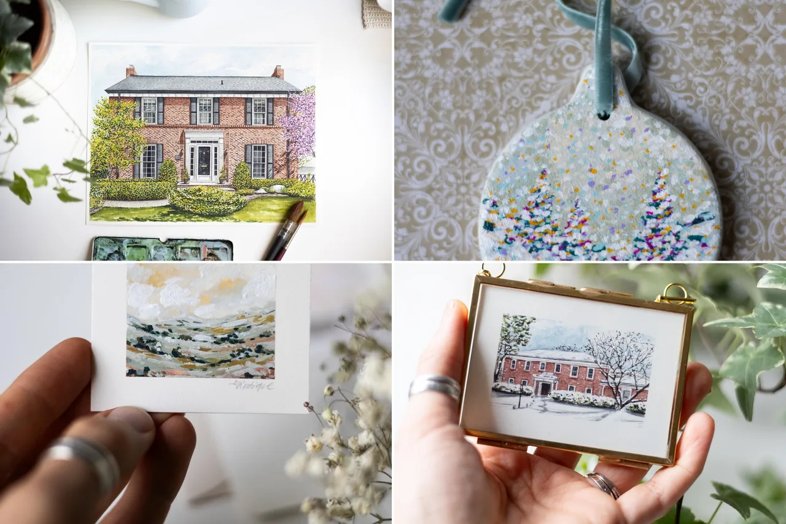
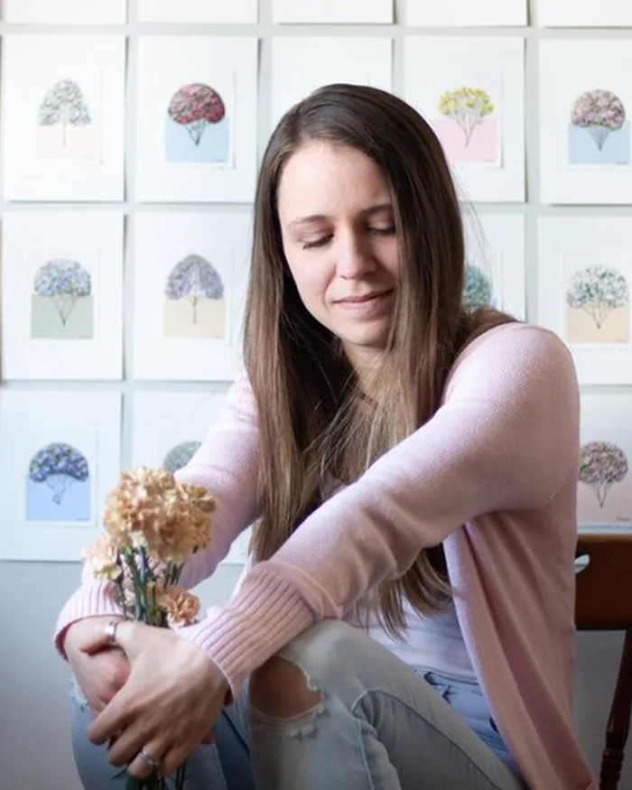
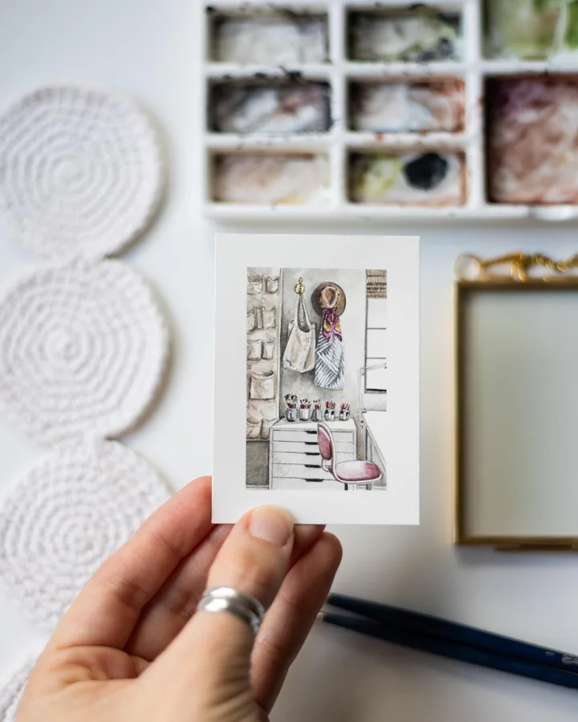
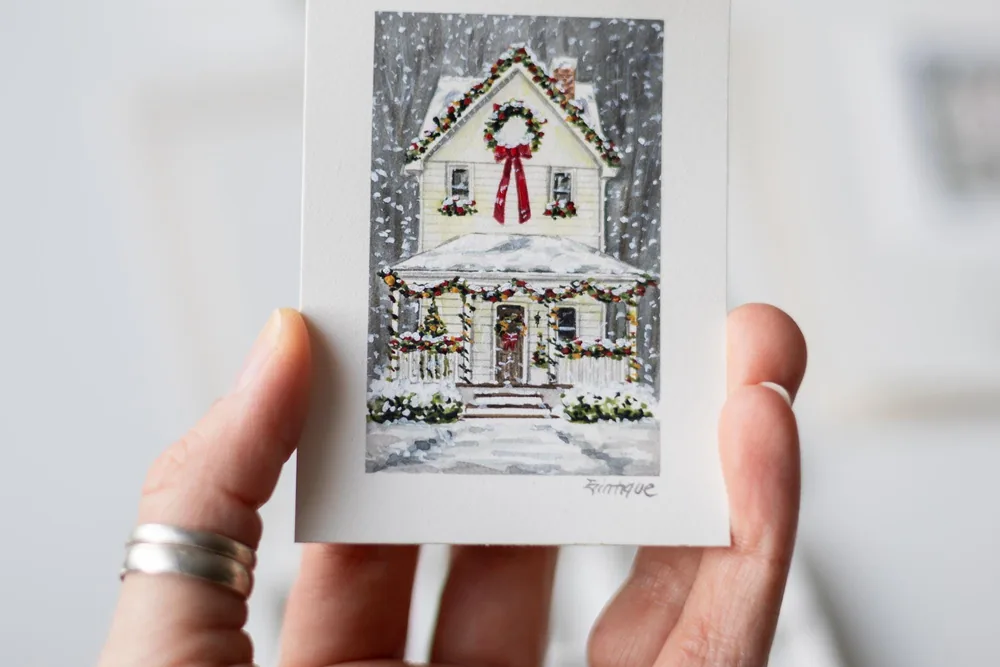
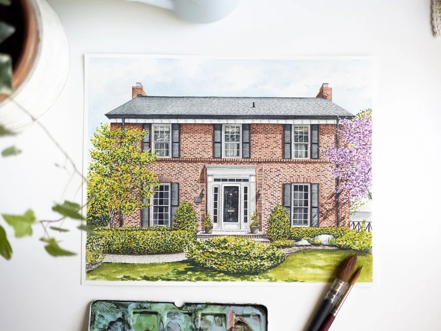
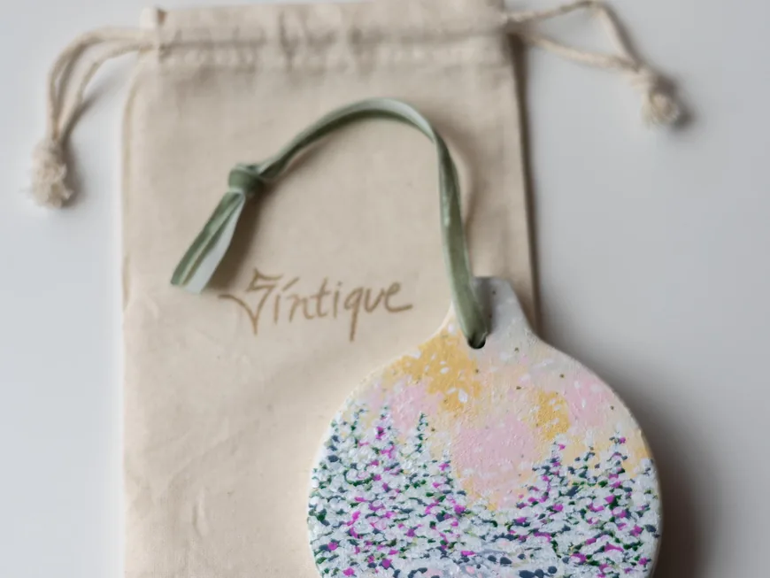
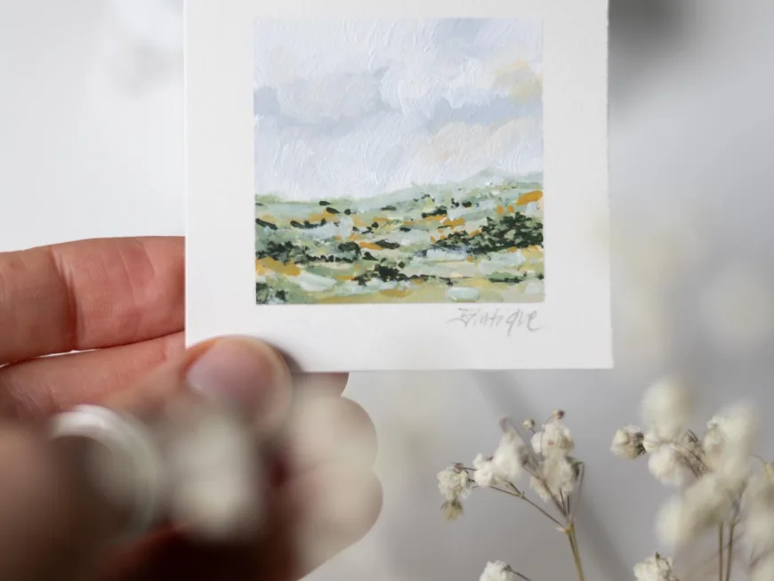
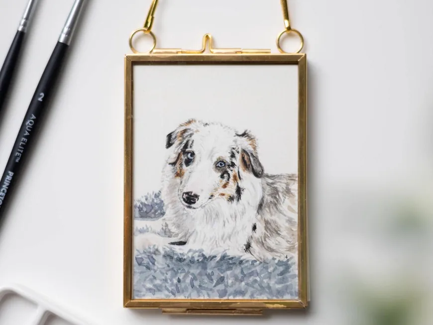

Custom
Painted from your photos.

Watercolor artist · Louisville, Kentucky
Let me paint your home

Meet the Artist
Owner & artist of Sintique Artist
Hi there! I was born and raised in Argentina, and today I live and work in Louisville, Kentucky, painting from home while raising our family.
Custom House Portraits and Miniatures · Let me paint your home · wife | mom of 3 | Jesus
Our story

01 How it started
When I was fourteen, I opened an art magazine and found the work of an Argentine artist that stopped me in my tracks. Drawing and painting had always been part of my life, but that moment awakened a calling.
I studied Visual Arts at the Universidad Autónoma de Entre Ríos, and over the years I have been honored with awards in Argentina and the United States, received scholarships in Critical Art and exhibited in solo shows.
Since 2018 I have devoted my work to watercolor house portraits. I am drawn to realism and careful detail, finding beauty in patience and precision. I hold deep gratitude for being able to build a life around a vocation I truly love.
— Sintique
02 Where & how it’s made
Alongside my house portraits, I create smaller collections inspired by flowers, landscapes and garments, quiet studies in watercolor and acryla gouache.

03 What makes it special
Painted from your photos.
Every brushstroke by Sintique.
Keepsakes to cherish.
Reviews
What we make
House portraits, ornaments, miniature landscapes and custom minis. Here is what you will find in the shop.

Detailed watercolor portraits of your home, a perfect first-home or family gift.

Ceramic holiday ornaments painted with winter scenes, wreaths and homes.

Tiny original watercolors of fields, winter scenes, flowers and garments.

Commissioned miniature portraits of pets, places and the things you love.
Everything is sold through the online shop, with secure checkout and buyer protection.
Stay in the loop
Sign up to be the first to know about sales and new products.
You’re in! 🎉
Continue to the shopEvery piece is painted by hand in Kentucky. Follow along on Instagram for new minis and commissions!
Visit the shop